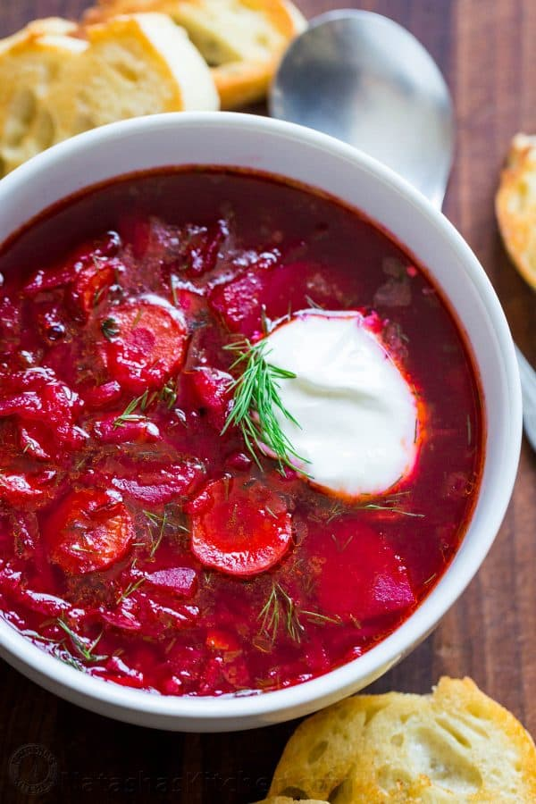

Pasta Carbonara

Desctiption
After several requests for my borscht recipe, here it is. Ukrainian Borscht… everyone knows what it is and many people around the world have fallen in love with this iconic beet soup.
I love the deep ruby color of this borsch! It’s so healthy and nutritious; packed with beans (protein), beets (iron), carrots (carotene), potatoes (vit C, potassium, Vit B6), oftentimes cabbage is added (vit K, vit C, fiber, etc…). It feels so good serving this to my family.
This is our family’s version of classic borsch. Borscht is definitely on the regular rotation at our house! This version keeps better because it is a meatless version but doesn’t lack in flavor because it uses good quality chicken broth.
Ingredients
For Borscht:
- 3 medium beets, peeled and grated
- 4 Tbsp olive oil, divided
- 8 cups chicken broth , + 2 cups water
- 3 medium yukon potatoes, peeled and sliced into bite-sized pieces
- 2 carrots, peeled and thinly sliced
For Zazharka (Mirepoix):
- 2 celery ribs, trimmed and finely chopped
- 1 small red bell pepper, finely chopped, optional
- 1 medium onion, finely chopped
- 4 Tbsp ketchup or 3 Tbsp tomato sauce
Additional Flavorings:
- 1 can white cannelini beans with their juice
- 2 bay leaves
- 2-3 Tbsp white vinegar, or to taste
- 1 tsp sea salt, or to taste
- 1/4 tsp black pepper, freshly ground
- 1 large garlic clove, pressed
- 3 Tbsp chopped dill
Steps
- Peel, grate and/or slice all vegetables (keeping sliced potatoes in cold water to prevent browning until ready to use then drain).
- Heat a large soup pot (5 1/2 Qt or larger) over medium/high heat and add 2 Tbsp olive oil. Add grated beets and sauté 10 minutes, stirring occasionally until beets are softened.
- Add 8 cups broth and 2 cups water. Add sliced potatoes and sliced carrots then cook for 10-15 minutes or until easily pierced with a fork.
- While potatoes are cooking, place a large skillet over medium/high heat and add 2 Tbsp oil. Add chopped onion, celery and bell pepper. Saute stirring occasionally until softened and lightly golden (7-8 minutes). Add 4 Tbsp Ketchup and stir fry 30 seconds then transfer to the soup pot to continue cooking with the potatoes.
- When potatoes and carrots reach desired softness, add 1 can of beans with their juice, 2 bay leaves, 2-3 Tbsp white vinegar, 1 tsp salt, 1/4 tsp black pepper, 1 pressed garlic clove, and 3 Tbsp chopped dill. Simmer for an additional 2-3 minutes and add more salt and vinegar to taste.